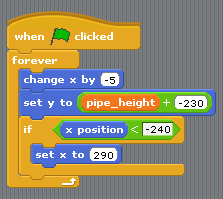
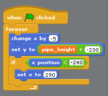

Welcome to Pygame Zero¶
Pygame Zero is for creating games without boilerplate.
It is intended for use in education, so that teachers can teach basic programming without needing to explain the Pygame API or write an event loop.
Courses¶
Introduction to Pygame Zero¶
Creating a window¶
First, create an empty file called intro.py.
Verify that this runs and creates a blank window by running
pgzrun intro.py
Everything in Pygame Zero is optional; a blank file is a valid Pygame Zero script!
You can quit the game by clicking on the window’s close button or by pressing
Ctrl-Q (⌘-Q on Mac). If the game stops responding for any reason, you
may need to terminate it by pressing Ctrl-C in your Terminal window.
Drawing a background¶
Next, let’s add a draw() function and set window dimensions. Pygame Zero
will call this function whenever it needs to paint the screen.
In intro.py, add the following:
1 2 3 4 5 | WIDTH = 300
HEIGHT = 300
def draw():
screen.fill((128, 0, 0))
|
Re-run pgzrun intro.py and the screen should now be a reddish square!
What is this code doing?
WIDTH and HEIGHT control the width and height of your window. The code
sets the window size to be 300 pixels in each dimension.
screen is a built-in that represents the window display. It has a
range of methods for drawing sprites and shapes. The
screen.fill() method call is filling the screen with a solid colour,
specified as a (red, green, blue) colour tuple. (128, 0, 0) will be a
medium-dark red. Try changing these values with numbers between 0 and 255
and see what colors you can create.
Let’s set up a sprite that we can animate.
Draw a sprite¶
Before we can draw anything, we’ll need to save an alien sprite to use. You can right click on this one and save it (“Save Image As…” or similar).

(This sprite has a transparency (or “alpha”) channel, which is great for games! But it’s designed for a dark background, so you may not be able to see the alien’s space helmet until it is shown in the game).
Tip
You can find lots of free sprites, including this one, on kenney.nl. This one comes from the Platformer Art Deluxe pack.
You need to save the file in the right place so that Pygame Zero can find it.
Create a directory called images and save the image into it as
alien.png. Both of those must be lower case. Pygame Zero will complain
otherwise, to alert you to a potential cross-platform compatibility pitfall.
If you’ve done that, your project should look like this:
.
├── images/
│ └── alien.png
└── intro.py
images/ is the standard directory that Pygame Zero will look in to find
your images.
There’s a built-in class called Actor that you can use to represent a
graphic to be drawn to the screen.
Let’s define one now. Change the intro.py file to read:
1 2 3 4 5 6 7 8 9 | alien = Actor('alien')
alien.pos = 100, 56
WIDTH = 500
HEIGHT = alien.height + 20
def draw():
screen.clear()
alien.draw()
|
Your alien should now be appearing on screen! By passing the string 'alien'
to the Actor class, it automatically loads the sprite, and has attributes
like positioning and dimensions. This allows us to set the HEIGHT of
the window based on the height of the alien.
The alien.draw() method draws the sprite to the screen at its current
position.
Moving the alien¶
Let’s set the alien off-screen; change the alien.pos line to read:
alien.topright = 0, 10
Note how you can assign to topright to move the alien actor by its
top-right corner. If the right-hand edge of the alien is at 0, the the
alien is just offscreen to the left. Now let’s make it move. Add the following
code to the bottom of the file:
def update():
alien.left += 2
if alien.left > WIDTH:
alien.right = 0
Pygame Zero will call your update() function once every frame. Moving the
alien a small number of pixels every frame will cause it to slide across the
screen. Once it slides off the right-hand side of the screen, we reset it back
to the left.
Handling clicks¶
Let’s make the game do something when you click on the alien. To do this we
need to define a function called on_mouse_down(). Add this to the source
code:
1 2 3 4 5 | def on_mouse_down(pos):
if alien.collidepoint(pos):
print("Eek!")
else:
print("You missed me!")
|
You should run the game and try clicking on and off the alien.
Pygame Zero is smart about how it calls your functions. If you don’t define
your function to take a pos parameter, Pygame Zero will call it without
a position. There’s also a button parameter for on_mouse_down. So we
could have written:
def on_mouse_down():
print("You clicked!")
or:
def on_mouse_down(pos, button):
if button == mouse.LEFT and alien.collidepoint(pos):
print("Eek!")
Sounds and images¶
Now let’s make the alien appear hurt. Save these files:
- alien_hurt.png - save this as
alien_hurt.pngin theimagesdirectory. - eep.wav - create a directory called
soundsand save this aseep.wavin that directory.
{kind=link}
Your project should now look like this:
.
├── images/
│ └── alien.png
│ └── alien_hurt.png
├── sounds/
│ └── eep.wav
└── intro.py
sounds/ is the standard directory that Pygame Zero will look in to find
your sound files.
Now let’s change the on_mouse_down function to use these new resources:
def on_mouse_down(pos):
if alien.collidepoint(pos):
sounds.eep.play()
alien.image = 'alien_hurt'
Now when you click on the alien, you should hear a sound, and the sprite will change to an unhappy alien.
There’s a bug in this game though; the alien doesn’t ever change back to a happy alien (but the sound will play on each click). Let’s fix this next.
Clock¶
If you’re familiar with Python outside of games programming, you might know the
time.sleep() method that inserts a delay. You might be tempted to write
code like this:
1 2 3 4 5 6 | def on_mouse_down(pos):
if alien.collidepoint(pos):
sounds.eep.play()
alien.image = 'alien_hurt'
time.sleep(1)
alien.image = 'alien'
|
Unfortunately, this is not at all suitable for use in a game. time.sleep()
blocks all activity; we want the game to go on running and animating. In fact
we need to return from on_mouse_down, and let the game work out when to
reset the alien as part of its normal processing, all the while running your
draw() and update() methods.
This is not difficult with Pygame Zero, because it has a built-in
Clock that can schedule functions to be called later.
First, let’s “refactor” (ie. re-organise the code). We can create functions to set the alien as hurt and also to change it back to normal:
1 2 3 4 5 6 7 8 9 10 11 12 | def on_mouse_down(pos):
if alien.collidepoint(pos):
set_alien_hurt()
def set_alien_hurt():
alien.image = 'alien_hurt'
sounds.eep.play()
def set_alien_normal():
alien.image = 'alien'
|
This is not going to do anything different yet. set_alien_normal() won’t be
called. But let’s change set_alien_hurt() to use the clock, so that the
set_alien_normal() will be called a little while after.
def set_alien_hurt():
alien.image = 'alien_hurt'
sounds.eep.play()
clock.schedule_unique(set_alien_normal, 1.0)
clock.schedule_unique() will cause set_alien_normal() to be called
after 1.0 second. schedule_unique() also prevents the same function
being scheduled more than once, such as if you click very rapidly.
Try it, and you’ll see the alien revert to normal after 1 second. Try clicking rapidly and verify that the alien doesn’t revert until 1 second after the last click.
Summary¶
We’ve seen how to load and draw sprites, play sounds, handle input events, and use the built-in clock.
You might like to expand the game to keep score, or make the alien move more erratically.
There are lots more features built in to make Pygame Zero easy to use. Check out the built in objects to learn how to use the rest of the API.
Migrating from Scratch¶
This tutorial will compare an implementation of Flappy Bird written in Scratch with one written in Pygame Zero. The Scratch and Pygame Zero programs are similar to a remarkable extent.
The Pygame Zero version can be found in Pygame Zero repository.
You can also download the Scratch version from the repository.
The Pygame Zero version includes scoring logic, which is omitted in the code examples on this page to make it a closer comparison.
The Python code shown below is re-arranged for clarity within the examples.
The stage¶
Here’s how the stage is laid out in our Scratch program:

There are just three objects, aside from the background: the bird, and the top and bottom pipes.
This corresponds to the Pygame Zero code setting these objects up as
Actors:
bird = Actor('bird1', (75, 200))
pipe_top = Actor('top', anchor=('left', 'bottom'))
pipe_bottom = Actor('bottom', anchor=('left', 'top'))
In Pygame Zero we also have to ensure we draw these objects. In principle this gives a little more flexibility about how to draw the scene:
1 2 3 4 5 | def draw():
screen.blit('background', (0, 0))
pipe_top.draw()
pipe_bottom.draw()
bird.draw()
|
Pipe movement¶
The pipes move at a constant rate irrespective of the bird. When they move off the left-hand side of the screen, they loop around to the right, and their vertical position moves at random.
In Scratch this can be achieved by creating two different scripts for the top and bottom pipe.
 

To summarise what’s happening here:
- The condition
x position < -240is true when a pipe is off the left-hand side of the screen, and this is the trigger to reset the pipes. - The
pipe_heightvariable is used to coordinate the two pipes. Because the gap between them should remain the same, we can’t pick both heights randomly. Therefore one of the scripts has this logic and the other doesn’t. - The
set y position to pipe height +/- 230sets one pipe to be abovepipe_heightand the other pipe belowpipe_height.
This code becomes much simpler in Pygame Zero. We could write a single function that updates both pipes. In fact I split it a different way to make it clear that the reset actions go together:
1 2 3 4 5 6 7 8 9 10 11 12 13 14 15 16 17 | import random
WIDTH = 400
HEIGHT = 708
GAP = 130
SPEED = 3
def reset_pipes():
pipe_gap_y = random.randint(200, HEIGHT - 200)
pipe_top.pos = (WIDTH, pipe_gap_y - GAP // 2)
pipe_bottom.pos = (WIDTH, pipe_gap_y + GAP // 2)
def update_pipes():
pipe_top.left -= SPEED
pipe_bottom.left -= SPEED
if pipe_top.right < 0:
reset_pipes()
|
A small difference here is that I can extract values that I want to re-use as
“constants”, spelled in UPPERCASE. This lets me change them in one place when I
want to tune the game. For example, in the code above, I could widen or narrow
the gap between the two pipes simply by changing GAP.
The biggest thing that differs is that there is no forever loop in Python
code. This is the big difference between Scratch and most text-based
programming languages: you must update the game by one animation step and then
return. Returning gives Pygame Zero a chance to do things like processing
input or redrawing the screen. Loop forever and the game would just sit there,
so any loops need to finish quickly.
Pygame Zero calls an update() function when it wants you to update the
animation by one step, so we just need to a call to update_walls():
def update():
update_walls()
The Bird¶
The patterns described above for how Scratch logic translates to Python code also apply for the bird logic. Let’s look at the Python code first this time.
The code to update the bird is organised into a function called
update_bird(). The first thing this function contains is some code to move
the bird according to gravity:
1 2 3 4 5 6 7 8 9 10 11 | GRAVITY = 0.3
# Initial state of the bird
bird.dead = False
bird.vy = 0
def update_bird():
uy = bird.vy
bird.vy += GRAVITY
bird.y += bird.vy
bird.x = 75
|
This is a simple gravity formula:
- Gravity means constant acceleration downwards.
- Acceleration is change in velocity.
- Velocity is change in position.
To represent this we need to track a variable bird.vy, which is the bird’s
velocity in the y direction. This is a new variable that we are defining,
not something that Pygame Zero provides for us.
- Gravity means constant acceleration downwards:
GRAVITYis greater than 0. - Acceleration is change in velocity:
GRAVITYgets added tobird.vy - Velocity is change in position:
bird.vygets added tobird.y
Note that the bird does not move horizontally! Its x position stays at
75 through the whole game. We simulate movement by moving the pipes towards
it. This looks as though it’s a moving camera following the bird. So there’s
no need for a vx variable in this game.
The next section makes the bird flap its wings:
1 2 3 4 5 | if not bird.dead:
if bird.vy < -3:
bird.image = 'bird2'
else:
bird.image = 'bird1'
|
This checks if the bird is moving upwards or downwards. We show the bird2
image if it is moving upwards fast and the bird1 image otherwise. (-3 was
picked by trial and error to make this look convincing).
The next section checks if the bird has collided with a wall:
if bird.colliderect(pipe_top) or bird.colliderect(pipe_bottom):
bird.dead = True
bird.image = 'birddead'
If so we set bird.dead to True. This is a boolean value meaning it
is either True or False. We can use this to easily check if the bird is
alive. If it isn’t alive it won’t respond to player input.
And the final section checks if the bird has fallen off the bottom (or the top) of the game screen. If so it resets the bird:
1 2 3 4 5 | if not 0 < bird.y < 720:
bird.y = 200
bird.dead = False
bird.vy = 0
reset_pipes()
|
What’s reset_pipes() doing there? Because I’d organised my pipes code to
be a separate function, I can just call it whenever I want to reset my walls.
In this case it makes it a better game because it gives the player a chance to
react when the bird moves back to its start position.
Again, this needs to be called every frame, so we add it to update():
def update():
update_walls()
update_bird()
The final part of the bird logic is that it has to respond to player control.
When we press a key, the bird flaps upwards. Pygame Zero will call an
on_key_down() function - if you’ve defined one - whenever a key is
pressed:
1 2 3 4 5 | FLAP_VELOCITY = -6.5
def on_key_down():
if not bird.dead:
bird.vy = FLAP_VELOCITY
|
Here, if the bird is not dead, we set its vy to a negative number: in
Pygame Zero this means it starts moving upwards.
You should be able to find a lot of parallels between the Python code and this Scratch code:


The biggest differences between Scratch and Pygame Zero are these:
- You cannot loop forever in Pygame Zero - just update for one frame and then return.
- The coordinates are different. In Pygame Zero, the top left of the screen is
x = 0, y = 0. Thexdirection goes from left to right as before, butygoes down the screen! This is whyGRAVITYis a positive number andFLAP_VELOCITYis a negative number in Python. bird.deadis a bool, so I can write code likeif not bird.deadinstead ofdead = 0as in Scratch.
Summary¶
Many of the concepts available in Scratch can be translated directly into Pygame Zero.
Here are some comparisons:
| In Scratch | In Pygame Zero |
|---|---|
change y by 1 (up) |
bird.y -= 1 |
change y by -1 (down) |
bird.y += 1 |
set costume to <name> |
bird.image = 'name' |
if dead = 0 |
if not bird.dead: |
set dead to 0 |
bird.dead = False |
if touching Top? |
if bird.colliderect(pipe_top) |
When Flag clicked…
forever |
Put code into the update() function. |
When [any] key pressed |
def on_key_down(): |
pick random a to b |
import random to load the random
module, then random.randint(a, b) |
| (0, 0) is the centre of the stage | (0, 0) is the top-left of the window |
In some cases, the code is simpler in Python because it can be organised in a way that helps it make sense when you read it.
The power of Pygame Zero’s actors also makes the coordinate manipulation
easier. We used the anchor position to position the pipes, and we were able
to see if a pipe was off-screen by checking pipe_top.right < 0 rather than
if x position < -240.
Reference¶
Event Hooks¶
Pygame Zero will automatically pick up and call event hooks that you define. This approach saves you from having to implement the event loop machinery yourself.
Game Loop Hooks¶
A typical game loop looks a bit like this:
while game_has_not_ended():
process_input()
update()
draw()
Input processing is a bit more complicated, but Pygame Zero allows you to
easily define the update() and draw() functions within your game
module.
-
draw()¶ Called by Pygame Zero when it needs to redraw your game window.
draw()must take no arguments.Pygame Zero attempts to work out when the game screen needs to be redrawn to avoid redrawing if nothing has changed. On each step of the game loop it will draw the screen in the following situations:
- If you have defined an
update()function (see below). - If a clock event fires.
- If an input event has been triggered.
One way this can catch you out is if you attempt to modify or animate something within the draw function. For example, this code is wrong: the alien is not guaranteed to continue moving across the screen:
def draw(): alien.left += 1 alien.draw()
The correct code uses
update()to modify or animate things and draw simply to paint the screen:1 2 3 4 5
def draw(): alien.draw() def update(): alien.left += 1
- If you have defined an
-
update() or update(dt)¶ Called by Pygame Zero to step your game logic. This will be called repeatedly, 60 times a second.
There are two different approaches to writing an update function.
In simple games you can assume a small time step (a fraction of a second) has elapsed between each call to
update(). Perhaps you don’t even care how big that time step is: you can just move objects by a fixed number of pixels per frame (or accelerate them by a fixed constant, etc.)A more advanced approach is to base your movement and physics calculations on the actual amount of time that has elapsed between calls. This can give smoother animation, but the calculations involved can be harder and you must take more care to avoid unpredictable behaviour when the time steps grow larger.
To use a time-based approach, you can change the update function to take a single parameter. If your update function takes an argument, Pygame Zero will pass it the elapsed time in seconds. You can use this to scale your movement calculations.
Event Handling Hooks¶
Similar to the game loop hooks, your Pygame Zero program can respond to input events by defining functions with specific names.
Somewhat like in the case of update(), Pygame Zero will inspect your
event handler functions to determine how to call them. So you don’t need to
make your handler functions take arguments. For example, Pygame Zero will
be happy to call any of these variations of an on_mouse_down function:
1 2 3 4 5 6 7 8 9 10 11 | def on_mouse_down():
print("Mouse button clicked")
def on_mouse_down(pos):
print("Mouse button clicked at", pos)
def on_mouse_down(button):
print("Mouse button", button, "clicked")
def on_mouse_down(pos, button):
print("Mouse button", button, "clicked at", pos)
|
It does this by looking at the names of the parameters, so they must be spelled exactly as above. Each event hook has a different set of parameters that you can use, as described below.
-
on_mouse_down([pos][, button])¶ Called when a mouse button is depressed.
Parameters: - pos – A tuple (x, y) that gives the location of the mouse pointer when the button was pressed.
- button – A
mouseenum value indicating the button that was pressed.
-
on_mouse_up([pos][, button])¶ Called when a mouse button is released.
Parameters: - pos – A tuple (x, y) that gives the location of the mouse pointer when the button was released.
- button – A
mouseenum value indicating the button that was released.
-
on_mouse_move([pos][, rel][, buttons])¶ Called when the mouse is moved.
Parameters: - pos – A tuple (x, y) that gives the location that the mouse pointer moved to.
- rel – A tuple (delta_x, delta_y) that represent the change in the mouse pointer’s position.
- buttons – A set of
mouseenum values indicating the buttons that were depressed during the move.
To handle mouse drags, use code such as the following:
def on_mouse_move(rel, buttons):
if mouse.LEFT in buttons:
# the mouse was dragged, do something with `rel`
...
-
on_key_down([key][, mod][, unicode])¶ Called when a key is depressed.
Parameters: - key – An integer indicating the key that was pressed (see below).
- unicode – Where relevant, the character that was typed. Not all keys will result in printable characters - many may be control characters. In the event that a key doesn’t correspond to a Unicode character, this will be the empty string.
- mod – A bitmask of modifier keys that were depressed.
-
on_key_up([key][, mod])¶ Called when a key is released.
Parameters: - key – An integer indicating the key that was released (see below).
- mod – A bitmask of modifier keys that were depressed.
-
on_music_end()¶ Called when a music track finishes.
Note that this will not be called if the track is configured to loop.
Buttons and Keys¶
Built-in objects mouse and keys can be used to determine which buttons
or keys were pressed in the above events.
Note that mouse scrollwheel events appear as button presses with the below
WHEEL_UP/WHEEL_DOWN button constants.
-
class
mouse¶ A built-in enumeration of buttons that can be received by the
on_mouse_*handlers.-
LEFT¶
-
MIDDLE¶
-
RIGHT¶
-
WHEEL_UP¶
-
WHEEL_DOWN¶
-
-
class
keys¶ A built-in enumeration of keys that can be received by the
on_key_*handlers.-
BACKSPACE¶
-
TAB¶
-
CLEAR¶
-
RETURN¶
-
PAUSE¶
-
ESCAPE¶
-
SPACE¶
-
EXCLAIM¶
-
QUOTEDBL¶
-
HASH¶
-
DOLLAR¶
-
AMPERSAND¶
-
QUOTE¶
-
LEFTPAREN¶
-
RIGHTPAREN¶
-
ASTERISK¶
-
PLUS¶
-
COMMA¶
-
MINUS¶
-
PERIOD¶
-
SLASH¶
-
K_0¶
-
K_1¶
-
K_2¶
-
K_3¶
-
K_4¶
-
K_5¶
-
K_6¶
-
K_7¶
-
K_8¶
-
K_9¶
-
COLON¶
-
SEMICOLON¶
-
LESS¶
-
EQUALS¶
-
GREATER¶
-
QUESTION¶
-
AT¶
-
LEFTBRACKET¶
-
BACKSLASH¶
-
RIGHTBRACKET¶
-
CARET¶
-
UNDERSCORE¶
-
BACKQUOTE¶
-
A¶
-
B¶
-
C¶
-
D¶
-
E¶
-
F¶
-
G¶
-
H¶
-
I¶
-
J¶
-
K¶
-
L¶
-
M¶
-
N¶
-
O¶
-
P¶
-
Q¶
-
R¶
-
S¶
-
T¶
-
U¶
-
V¶
-
W¶
-
X¶
-
Y¶
-
Z¶
-
DELETE¶
-
KP0¶
-
KP1¶
-
KP2¶
-
KP3¶
-
KP4¶
-
KP5¶
-
KP6¶
-
KP7¶
-
KP8¶
-
KP9¶
-
KP_PERIOD¶
-
KP_DIVIDE¶
-
KP_MULTIPLY¶
-
KP_MINUS¶
-
KP_PLUS¶
-
KP_ENTER¶
-
KP_EQUALS¶
-
UP¶
-
DOWN¶
-
RIGHT¶
-
LEFT¶
-
INSERT¶
-
HOME¶
-
END¶
-
PAGEUP¶
-
PAGEDOWN¶
-
F1¶
-
F2¶
-
F3¶
-
F4¶
-
F5¶
-
F6¶
-
F7¶
-
F8¶
-
F9¶
-
F10¶
-
F11¶
-
F12¶
-
F13¶
-
F14¶
-
F15¶
-
NUMLOCK¶
-
CAPSLOCK¶
-
SCROLLOCK¶
-
RSHIFT¶
-
LSHIFT¶
-
RCTRL¶
-
LCTRL¶
-
RALT¶
-
LALT¶
-
RMETA¶
-
LMETA¶
-
LSUPER¶
-
RSUPER¶
-
MODE¶
-
HELP¶
-
PRINT¶
-
SYSREQ¶
-
BREAK¶
-
MENU¶
-
POWER¶
-
EURO¶
-
LAST¶
-
Additionally you can access a set of constants that represent modifier keys:
Built-in Objects¶
Pygame Zero provides useful built-in objects to help you make games easily.
Screen¶
Text Formatting¶
The Screen’s draw.text() method has a very rich set of methods for
position and formatting of text. Some examples:
1 2 3 4 5 6 7 8 9 10 11 12 | screen.draw.text("Text color", (50, 30), color="orange")
screen.draw.text("Font name and size", (20, 100), fontname="Boogaloo", fontsize=60)
screen.draw.text("Positioned text", topright=(840, 20))
screen.draw.text("Allow me to demonstrate wrapped text.", (90, 210), width=180, lineheight=1.5)
screen.draw.text("Outlined text", (400, 70), owidth=1.5, ocolor=(255,255,0), color=(0,0,0))
screen.draw.text("Drop shadow", (640, 110), shadow=(2,2), scolor="#202020")
screen.draw.text("Color gradient", (540, 170), color="red", gcolor="purple")
screen.draw.text("Transparency", (700, 240), alpha=0.1)
screen.draw.text("Vertical text", midleft=(40, 440), angle=90)
screen.draw.text("All together now:\nCombining the above options",
midbottom=(427,460), width=360, fontname="Boogaloo", fontsize=48,
color="#AAFF00", gcolor="#66AA00", owidth=1.5, ocolor="black", alpha=0.8)
|
In its simplest usage, screen.draw.text requires the string you want to
draw, and the position. You can either do this by passing coordinates as the
second argument (which is the top left of where the text will appear), or use
the positioning keyword arguments (described later):
screen.draw.text("hello world", (20, 100))
screen.draw.text takes many optional keyword arguments, described below.
Font name and size¶
Fonts are loaded from a directory named fonts, in a similar way to the
handling of images and sounds. Fonts must be in .ttf format. For example:
screen.draw.text("hello world", (100, 100), fontname="Viga", fontsize=32)
Keyword arguments:
fontname: filename of the font to draw. By default, use the system font.fontsize: size of the font to use, in pixels. Defaults to24.antialias: whether to render with antialiasing. Defaults toTrue.
Color and background color¶
screen.draw.text("hello world", (100, 100), color=(200, 200, 200), background="gray")
Keyword arguments:
color: foreground color to use. Defaults towhite.background: background color to use. Defaults toNone.
color (as well as background, ocolor, scolor, and
gcolor) can be an (r, g, b) sequence such as (255,127,0), a
pygame.Color object, a color name such as "orange", an HTML hex
color string such as "#FF7F00", or a string representing a hex color
number such as "0xFF7F00".
background can also be None, in which case the background is
transparent. Unlike pygame.font.Font.render, it’s generally not more
efficient to set a background color when calling screen.draw.text. So only
specify a background color if you actually want one.
Colors with alpha transparency are not supported (except for the special
case of invisible text with outlines or drop shadows - see below). See
the alpha keyword argument for transparency.
Positioning¶
screen.draw.text("hello world", centery=50, right=300)
screen.draw.text("hello world", midtop=(400, 0))
Keyword arguments:
top left bottom right
topleft bottomleft topright bottomright
midtop midleft midbottom midright
center centerx centery
Positioning keyword arguments behave like the corresponding properties
of pygame.Rect. Either specify two arguments, corresponding to the
horizontal and vertical positions of the box, or a single argument that
specifies both.
If the position is overspecified (e.g. both left and right are
given), then extra specifications will be (arbitrarily but
deterministically) discarded. For constrained text, see the section on
screen.draw.textbox below.
Word wrap¶
screen.draw.text("splitting\nlines", (100, 100))
screen.draw.text("splitting lines", (100, 100), width=60)
Keyword arguments:
width: maximum width of the text to draw, in pixels. Defaults toNone.widthem: maximum width of the text to draw, in font-based em units. Defaults toNone.lineheight: vertical spacing between lines, in units of the font’s default line height. Defaults to1.0.
screen.draw.text will always wrap lines at newline (\n) characters. If
width or widthem is set, it will also try to wrap lines in order
to keep each line shorter than the given width. The text is not
guaranteed to be within the given width, because wrapping only occurs at
space characters, so if a single word is too long to fit on a line, it
will not be broken up. Outline and drop shadow are also not accounted
for, so they may extend beyond the given width.
You can prevent wrapping on a particular space with non-breaking space
characters (\u00A0).
Text alignment¶
screen.draw.text("hello\nworld", bottomright=(500, 400), align="left")
Keyword argument:
align: horizontal positioning of lines with respect to each other. Defaults toNone.
align determines how lines are positioned horizontally with respect
to each other, when more than one line is drawn. Valid values for
align are the strings "left", "center", or "right", a
numerical value between 0.0 (for left alignment) and 1.0 (for
right alignment), or None.
If align is None, the alignment is determined based on other arguments,
in a way that should be what you want most of the time. It depends on any
positioning arguments (topleft, centerx, etc.), anchor, and finally
defaults to "left". I suggest you generally trust the default alignment,
and only specify align if something doesn’t look right.
Outline¶
screen.draw.text("hello world", (100, 100), owidth=1, ocolor="blue")
Keyword arguments:
owidth: outline thickness, in outline units. Defaults toNone.ocolor: outline color. Defaults to"black".
The text will be outlined if owidth is specified. The outlining is a
crude manual method, and will probably look bad at large sizes. The
units of owidth are chosen so that 1.0 is a good typical value
for outlines. Specifically, they’re the font size divided by 24.
As a special case, setting color to a transparent value (e.g.
(0,0,0,0)) while using outilnes will cause the text to be invisible,
giving a hollow outline. (This feature is not compatible with
gcolor.)
Valid values for ocolor are the same as for color.
Drop shadow¶
screen.draw.text("hello world", (100, 100), shadow=(1.0,1.0), scolor="blue")
Keyword arguments:
shadow: (x,y) values representing the drop shadow offset, in shadow units. Defaults toNone.scolor: drop shadow color. Defaults to"black".
The text will have a drop shadow if shadow is specified. It must be
set to a 2-element sequence representing the x and y offsets of the drop
shadow, which can be positive, negative, or 0. For example,
shadow=(1.0,1.0) corresponds to a shadow down and to the right of
the text. shadow=(0,-1.2) corresponds to a shadow higher than the
text.
The units of shadow are chosen so that 1.0 is a good typical
value for the offset. Specifically, they’re the font size divided by 18.
As a special case, setting color to a transparent value (e.g.
(0,0,0,0)) while using drop shadow will cause the text to be
invisible, giving a hollow shadow. (This feature is not compatible with
gcolor.)
Valid values for scolor are the same as for color.
Gradient color¶
screen.draw.text("hello world", (100, 100), color="black", gcolor="green")
Keyword argument:
gcolor: Lower gradient stop color. Defaults toNone.
Specify gcolor to color the text with a vertical color gradient. The
text’s color will be color at the top and gcolor at the bottom.
Positioning of the gradient stops and orientation of the gradient are
hard coded and cannot be specified.
Requries pygame.surfarray module, which uses numpy or Numeric
library.
Alpha transparency¶
screen.draw.text("hello world", (100, 100), alpha=0.5)
Keyword argument:
alpha: alpha transparency value, between 0 and 1. Defaults to1.0.
In order to maximize reuse of cached transparent surfaces, the value of
alpha is rounded.
Requires pygame.surfarray module, which uses numpy or Numeric
library.
Anchored positioning¶
screen.draw.text("hello world", (100, 100), anchor=(0.3,0.7))
Keyword argument:
anchor: a length-2 sequence of horizontal and vertical anchor fractions. Defaults to(0.0, 0.0).
anchor specifies how the text is anchored to the given position,
when no positioning keyword arguments are passed. The two values in
anchor can take arbitrary values between 0.0 and 1.0. An
anchor value of (0,0), the default, means that the given
position is the top left of the text. A value of (1,1) means the
given position is the bottom right of the text.
Rotation¶
screen.draw.text("hello world", (100, 100), angle=10)
Keyword argument:
angle: counterclockwise rotation angle in degrees. Defaults to0.
Positioning of rotated surfaces is tricky. When drawing rotated text, the
anchor point, the position you actually specify, remains fixed, and the text
rotates around it. For instance, if you specify the top left of the text to be
at (100, 100) with an angle of 90, then the Surface will actually be
drawn so that its bottom left is at (100, 100).
If you find that confusing, try specifying the center. If you anchor the text at the center, then the center will remain fixed, no matter how you rotate it.
In order to maximize reuse of cached rotated surfaces, the value of
angle is rounded to the nearest multiple of 3 degrees.
Constrained text¶
screen.draw.textbox("hello world", (100, 100, 200, 50))
screen.draw.textbox requires two arguments: the text to be drawn, and a
pygame.Rect or a Rect-like object to stay within. The font size
will be chosen to be as large as possible while staying within the box.
Other than fontsize and positional arguments, you can pass all the
same keyword arguments to screen.draw.textbox as to screen.draw.text.
The screen object represents your game screen.
It is a thin wrapper around a Pygame surface that allows you to easily draw images to the screen (“blit” them).
-
class
Screen¶ -
surface¶ The raw Pygame surface that represents the screen buffer. You can use this for advanced graphics operations.
-
clear()¶ Reset the screen to black.
-
fill((red, green, blue))¶ Fill the screen with a solid color.
-
blit(image, (left, top))¶ Draw the image to the screen at the given position.
blit()accepts either a Surface or a string as itsimageparameter. Ifimageis astrthen the named image will be loaded from theimages/directory.
-
draw.line(start, end, (r, g, b))¶ Draw a line from start to end.
-
draw.circle(pos, radius, (r, g, b))¶ Draw the outline of a circle.
-
draw.filled_circle(pos, radius, (r, g, b))¶ Draw a filled circle.
-
draw.filled_rect(rect, (r, g, b))¶ Draw a filled rectangle.
-
draw.text(text, [pos, ]**kwargs)¶ Draw text.
There’s an extremely rich API for positioning and formatting text; see Text Formatting for full details.
-
draw.textbox(text, rect, **kwargs)¶ Draw text, sized to fill the given Rect.
There’s an extremely rich API for formatting text; see Text Formatting for full details.
-
Rect¶
The Pygame Rect class is available as a built in. This can be used in a variety of ways, from detecting clicks within a region to drawing a box onto the screen:
For example, you can draw a box with:
1 2 3 4 5 | RED = 200, 0, 0
BOX = Rect((20, 20), (100, 100))
def draw():
screen.draw.rect(BOX, RED)
|
Resource Loading¶
The images and sounds objects can be used to load images and sounds
from files stored in the images and sounds subdirectories respectively.
Pygame Zero will handle loading of these resources on demand and will cache
them to avoid reloading them.
You generally need to ensure that your images are named with lowercase letters, numbers and underscores only. They also have to start with a letter.
File names like these will work well with the resource loader:
alien.png
alien_hurt.png
alien_run_7.png
These will not work:
3.png
3degrees.png
my-cat.png
sam's dog.png
Images¶
Pygame Zero can load images in .png, .gif, and .jpg formats. PNG is
recommended: it will allow high quality images with transparency.
We need to ensure an images directory is set up. If your project contains the following files:
space_game.py
images/alien.png
Then space_game.py could draw the ‘alien’ sprite to the screen with this
code:
def draw():
screen.clear()
screen.blit('alien', (10, 10))
The name passed to blit() is the name of the image file within the images
directory, without the file extension.
Or using the Actors API,
alien = Actor('alien')
def draw():
alien.draw()
There are some restrictions on the file names in both cases: they may only contain lowercase latin letters, numbers and underscores. This is to prevent compatibility problems when your game is played on a different operating system that has different case sensitivity.
Image Surfaces¶
You can also load images from the images directory using the images
object. This allows you to work with the image data itself, query its
dimensions and so on:
1 2 3 4 5 | forest = []
for i in range(5):
forest.append(
Actor('tree', topleft=(images.tree.width * i, 0))
)
|
Each loaded image is a Pygame Surface. You will typically use
screen.blit(...) to draw this to the screen. It also provides handy methods
to query the size of the image in pixels:
-
class
Surface¶ -
get_width()¶ Returns the width of the image in pixels.
-
get_height()¶ Returns the height of the image in pixels.
-
get_size()¶ Returns a tuple (width, height) indicating the size in pixels of the surface.
-
get_rect()¶ Get a
Rectthat is pre-populated with the bounds of the image if the image was located at the origin.Effectively this is equivalent to:
Rect((0, 0), image.get_size())
-
Sounds¶
Pygame Zero can load sounds in .wav and .ogg formats. WAV is great for
small sound effects, while OGG is a compressed format that is more suited to
music. You can find free .ogg and .wav files online that can be used in your
game.
We need to ensure a sounds directory is set up. If your project contains the following files:
drum_kit.py
sounds/drum.wav
Then drum_kit.py could play the drum sound whenever the mouse is clicked
with this code:
def on_mouse_down():
sounds.drum.play()
Each loaded sound is a Pygame Sound, and has various methods to play and
stop the sound as well as query its length in seconds:
-
class
Sound¶ -
play()¶ Play the sound.
-
play(loops) Play the sound, but loop it a number of times.
Parameters: loops – The number of times to loop. If you pass -1as the number of times to loop, the sound will loop forever (or until you callSound.stop()
-
stop()¶ Stop playing the sound.
-
get_length()¶ Get the duration of the sound in seconds.
-
You should avoid using the sounds object to play longer pieces of music.
Because the sounds sytem will fully load the music into memory before playing
it, this can use a lot of memory, as well as introducing a delay while the
music is loaded.
Music¶
New in version 1.1.
Warning
The music API is experimental and may be subject to cross-platform portability issues.
In particular:
- MP3 may not be available on some Linux distributions.
- Some OGG Vorbis files seem to hang Pygame with 100% CPU.
In the case of the latter issue, the problem may be fixed by re-encoding (possibly with a different encoder).
A built-in object called music provides access to play music from within
a music/ directory (alongside your images/ and sounds/ directories,
if you have them). The music system will load the track a little bit at a time
while the music plays, avoiding the problems with using sounds to play
longer tracks.
Another difference to the sounds system is that only one music track can be playing at a time. If you play a different track, the previously playing track will be stopped.
-
music.play(name)¶ Play a music track from the given file. The track will loop indefinitely.
This replaces the currently playing track and cancels any tracks previously queued with
queue().You do not need to include the extension in the track name; for example, to play the file
handel.mp3on a loop:music.play('handel')
-
music.play_once(name)¶ Similar to
play(), but the music will stop after playing through once.
-
music.queue(name)¶ Similar to
play_once(), but instead of stopping the current music, the track will be queued to play after the current track finishes (or after any other previously queued tracks).
-
music.stop()¶ Stop the music.
-
music.pause()¶ Pause the music temporarily. It can be resumed by calling
unpause().
-
music.unpause()¶ Unpause the music.
-
music.is_playing()¶ Returns True if the music is playing (and is not paused), False otherwise.
-
music.fadeout(duration)¶ Fade out and eventually stop the current music playback.
Parameters: duration – The duration in seconds over which the sound will be faded out. For example, to fade out over half a second, call music.fadeout(0.5).
-
music.set_volume(volume)¶ Set the volume of the music system.
This takes a number between 0 (meaning silent) and 1 (meaning full volume).
-
music.get_volume()¶ Get the current volume of the music system.
If you have started a music track playing using music.play_once(), you
can use the on_music_end() hook to do something when the
music ends - for example, to pick another track at random.
Clock¶
Often when writing a game, you will want to schedule some game event to occur at a later time. For example, we may want a big boss alien to appear after 60 seconds. Or perhaps a power-up will appear every 20 seconds.
More subtle are the situations when you want to delay some action for a shorter period. For example you might have a laser weapon that takes 1 second to charge up.
We can use the clock object to schedule a function to happen in the
future.
Let’s start by defining a function fire_laser that we want to run in the
future:
def fire_laser():
lasers.append(player.pos)
Then when the fire button is pressed, we will ask the clock to call it for
us after exactly 1 second:
def on_mouse_down():
clock.schedule(fire_laser, 1.0)
Note that fire_laser is the function itself; without parentheses, it is
not being called here! The clock will call it for us.
(It is a good habit to write out times in seconds with a decimal point, like
1.0. This makes it more obvious when you are reading it back, that you are
referring to a time value and not a count of things.)
clock provides the following useful methods:
-
class
Clock¶ -
schedule(callback, delay)¶ Schedule callback to be called after the given delay.
Repeated calls will schedule the callback repeatedly.
Parameters: - callback – A callable that takes no arguments.
- delay – The delay, in seconds, before the function should be called.
-
schedule_unique(callback, delay)¶ Schedule callback to be called once after the given delay.
If callback was already scheduled, cancel and reschedule it. This applies also if it was scheduled multiple times: after calling
schedule_unique, it will be scheduled exactly once.Parameters: - callback – A callable that takes no arguments.
- delay – The delay, in seconds, before the function should be called.
-
schedule_interval(callback, interval)¶ Schedule callback to be called repeatedly.
Parameters: - callback – A callable that takes no arguments.
- interval – The interval in seconds between calls to callback.
-
unschedule(callback)¶ Unschedule callback if it has been previously scheduled (either because it has been scheduled with
schedule()and has not yet been called, or because it has been scheduled to repeat withschedule_interval().
-
Note that the Pygame Zero clock only holds weak references to each callback you give it. It will not fire scheduled events if the objects and methods are not referenced elsewhere. This can help prevent the clock keeping objects alive and continuing to fire unexpectedly after they are otherwise dead.
The downside to the weak references is that you won’t be able to schedule lambdas or any other object that has been created purely to be scheduled. You will have to keep a reference to the object.
Actors¶
Once you have many images moving around in a game it can be convenient to have
something that holds in one place the image and where it is on screen. We’ll
call each moving image on screen an Actor. You can create an actor by supplying
at least an image name (from the images folder above). To draw the alien talked
about above:
1 2 3 4 5 | alien = Actor('alien', (50, 50))
def draw():
screen.clear()
alien.draw()
|
You can move the actor around by setting its pos attribute in an update:
1 2 3 4 5 | def update():
if keyboard.left:
alien.x -= 1
elif keyboard.right:
alien.x += 1
|
And you may change the image used to draw the actor by setting its image attribute to some new image name:
alien.image = 'alien_hurt'
Actors have all the same attributes and methods as Rect, including methods like .colliderect() which can be used to test whether two actors have collided.
Positioning Actors¶
If you assign a new value to one of the position attributes then the actor will be moved. For example:
alien.right = WIDTH
will position the alien so its right-hand side is set to WIDTH.
Similarly, you can also set the initial position of the actor in the
constructor, by passing one of these as a keyword argument: pos,
topleft, topright, bottomleft, bottomright, midtop,
midleft, midright, midbottom or center:
This can be done during creation or by assigning a pair of x, y co-ordinates. For example:
1 2 3 4 5 6 7 8 | WIDTH = 200
HEIGHT = 200
alien = Actor('alien', center=(100,100))
def draw():
screen.clear()
alien.draw()
|

Changing center=(100, 100) to midbottom=(100, 200) gives you:

If you don’t specify an initial position, the actor will initially be
positioned in the top-left corner (equivalent to topleft=(0, 0)).
Anchor point¶
Actors have an “anchor position”, which is a convenient way to position the
actor in the scene. By default, the anchor position is the center, so the
.pos attribute refers to the center of the actor (and so do the x and
y coordinates). It’s common to want to set the anchor point to another
part of the sprite (perhaps the feet - so that you can easily set the Actor to
be “standing on” something):
alien = Actor('alien', anchor=('center', 'bottom'))
spaceship = Actor('spaceship', anchor=(10, 50))
anchor is specified as a tuple (xanchor, yanchor), where the values can
be floats or the strings left, center/middle, right, top or
bottom as appropriate.
Rotation¶
New in version 1.2.
The .angle attribute of an Actor controls the rotation of the sprite, in
degrees, anticlockwise (counterclockwise).
The centre of rotation is the Actor’s anchor point.
Note that this will change the width and height of the Actor.
For example, to make an asteroid sprite spinning slowly anticlockwise in space:
asteroid = Actor('asteroid', center=(300, 300))
def update():
asteroid.angle += 1
To have it spin clockwise, we’d change update() to:
def update():
asteroid.angle -= 1
As a different example, we could make an actor ship always face the mouse
pointer. Because angle_to() returns 0 for “right”, the sprite we
use for “ship” should face right:
ship = Actor('ship')
def on_mouse_move(pos):
ship.angle = ship.angle_to(pos)

Remember that angles loop round, so 0 degrees == 360 degrees == 720 degrees. Likewise -180 degrees == 180 degrees.
Distance and angle to¶
Actors have convenient methods for calculating their distance or angle to other
Actors or (x, y) coordinate pairs.
-
Actor.distance_to(target)¶ Return the distance from this actor’s position to target, in pixels.
-
Actor.angle_to(target)¶ Return the angle from this actor’s position to target, in degrees.
This will return a number between -180 and 180 degrees. Right is 0 degrees and the angles increase going anticlockwise.
Therefore:
- Left is 180 degrees.
- Up is 90 degrees.
- Down is -90 degrees.
The Keyboard¶
You probably noticed that we used the keyboard in the above code.
If you’d like to know what keys are pressed on the keyboard, you can query the
attributes of the keyboard builtin. If, say, the left arrow is held down,
then keyboard.left will be True, otherwise it will be False.
There are attributes for every key; some examples:
1 2 3 4 5 | keyboard.a # The 'A' key
keyboard.left # The left arrow key
keyboard.rshift # The right shift key
keyboard.kp0 # The '0' key on the keypad
keyboard.k_0 # The main '0' key
|
The full set of key constants is given in the Buttons and Keys documentation, but the attributes are lowercase, because these are variables not constants.
Deprecated since version 1.1: Uppercase and prefixed attribute names (eg. keyboard.LEFT or
keyboard.K_a) are now deprecated; use lowercase attribute names
instead.
New in version 1.1: You can now also query the state of the keys using the keyboard constants themselves:
keyboard[keys.A] # True if the 'A' key is pressed
keyboard[keys.SPACE] # True if the space bar is pressed
Animations¶
You can animate most things in pygame using the builtin animate(). For
example, to move an Actor from its current position on the
screen to the position (100, 100):
animate(alien, pos=(100, 100))
-
animate(object, tween='linear', duration=1, on_finished=None, **targets)¶ Animate the attributes on object from their current value to that specified in the targets keywords.
Parameters: - tween – The type of tweening to use.
- duration – The duration of the animation, in seconds.
- on_finished – Function called when the animation finishes.
- targets – The target values for the attributes to animate.
The tween argument can be one of the following:
| ‘linear’ | Animate at a constant speed from start to finish |
| ‘accelerate’ | Start slower and accelerate to finish |
| ‘decelerate’ | Start fast and decelerate to finish |
| ‘accel_decel’ | Accelerate to mid point and decelerate to finish |
| ‘end_elastic’ | Give a little wobble at the end |
| ‘start_elastic’ | Have a little wobble at the start |
| ‘both_elastic’ | Have a wobble at both ends |
| ‘bounce_end’ | Accelerate to the finish and bounce there |
| ‘bounce_start’ | Bounce at the start |
| ‘bounce_start_end’ | Bounce at both ends |
The animate() function returns an Animation instance:
-
class
Animation¶ -
stop(complete=False)¶ Stop the animation, optionally completing the transition to the final property values.
Parameters: complete – Set the animated attribute to the target value.
-
running¶ This will be True if the animation is running. It will be False when the duration has run or the
stop()method was called before then.
-
on_finished¶ You may set this attribute to a function which will be called when the animation duration runs out. The
on_finishedargument toanimate()also sets this attribute. It is not called whenstop()is called. This function takes no arguments.
-
Tone Generator¶
New in version 1.2.
Pygame Zero can play tones using a built-in synthesizer.
-
tone.play(pitch, duration)¶ Play a note at the given pitch for the given duration.
Duration is in seconds.
The pitch can be specified as a number in which case it is the frequency of the note in hertz.
Alternatively, the pitch can be specified as a string representing a note name and octave. For example:
'E4'would be E in octave 4.'A#5'would be A-sharp in octave 5.'Bb3'would be B-flat in octave 3.
Creating notes, particularly long notes, takes time - up to several milliseconds. You can create your notes ahead of time so that this doesn’t slow your game down while it is running:
-
tone.create(pitch, duration)¶ Create and return a Sound object.
The arguments are as for play(), above.
This could be used in a Pygame Zero program like this:
beep = tone.create('A3', 0.5)
def on_mouse_down():
beep.play()
User Guide¶
Installing Pygame Zero¶
On desktop systems¶
pip install pgzero
This will also install Pygame. Pre-compiled Pygame packages are available to pip for Windows & Linux (32-bit and 64-bit), and for Mac OS (64-bit only). If you have a different system, you’ll need to find a way to install pygame first.
On Raspberry Pi¶
pgzero has been installed by default since the release of Raspbian Jessie in September 2015!
Running Pygame Zero in IDLE and other IDEs¶
New in version 1.2.
Pygame Zero is usually run using a command such as:
pgzrun my_program.py
Certain programs, such as integrated development environments like IDLE and
Edublocks, will only run python, not pgzrun.
Pygame Zero includes a way of writing a full Python program that can be run
using python. To do it, put
import pgzrun
as the very first line of the Pygame Zero program, and put
pgzrun.go()
as the very last line.
Example¶
Here is a Pygame Zero program that draws a circle. You can run this by pasting it into IDLE:
1 2 3 4 5 6 7 8 9 10 11 12 | import pgzrun
WIDTH = 800
HEIGHT = 600
def draw():
screen.clear()
screen.draw.circle((400, 300), 30, 'white')
pgzrun.go()
|
Other libraries like Pygame Zero¶
Pygame Zero started a trend for Python “zero” libraries. Our friends have created these great libraries. Some of these can be combined with Pygame Zero!
Network Zero¶
Network Zero makes it simpler to have several machines or several processes on one machine discovering each other and talking across a network.
Caution
If you want to use Network Zero with Pygame Zero, make sure you don’t let
it block (stop everything while waiting for messages). This will
interrupt Pygame Zero so that it stops animating the screen or even
responding to input. Always set the wait_for_s or wait_for_reply_s
options to 0 seconds.
GUI Zero¶
GUI Zero is a library for creating Graphical User Interfaces (GUIs) with windows, buttons, sliders, textboxes and so on.
Because GUI Zero and Pygame Zero both provide different approaches for drawing to the screen, they are not usable together.
GPIO Zero¶
GPIO Zero is a library for controlling devices connected to the General Purpose Input/Output (GPIO) pins on a Raspberry Pi.
GPIO Zero generally runs in its own thread, meaning that it will usually work very well with Pygame Zero.
Adventurelib¶
Adventurelib is a library for creating making text-based games easier to write (and which doesn’t do everything for you!).
Writing text-based games requires a very different set of skills to writing graphical games. Adventurelib is pitched at a slightly more advanced level of Python programmer than Pygame Zero.
Adventurelib cannot currently be combined with Pygame Zero.
Changelog¶
1.2 - 2018-02-24¶
- New: Actors can be rotated by assigning to
actor.angle - New: Actors now have
angle_to()anddistance_to()methods. - New: Actors are no longer subclasses of Rect, though they provide the same methods/properties. However they are now provided with floating point precision.
- New:
tone.play()function to allow playing musical notes. - New:
pgzrun.go()to allow running Pygame Zero from an IDE (see Running Pygame Zero in IDLE and other IDEs). - New: show joypad icon by default
- Examples: add Asteroids example game (thanks to Ian Salmons)
- Examples: add Flappy Bird example game
- Examples: add Tetra example game (thanks to David Bern)
- Docs: Add a logo, fonts and colours to the documentation.
- Docs: Documentation for the anchor point system for Actors
- Docs: Add Migrating from Scratch documentation
- Fix:
on_mouse_move()did not correctly handle thebuttonsparameter. - Fix: Error message when resource not found incorrectly named last extension searched.
- Fix: Drawing wrapped text would cause crashes.
- Fix:
animate()now replaces animations of the same property, rather than creating two animations which fight. - Updated ptext to a revision as of 2016-11-17.
- Removed: removed undocumented British English
centrex,centrey,centreattribute aliases on ZRect (because they are not Rect-compatible).
1.1 - 2015-08-03¶
- Added a spell checker that will point out hook or parameter names that have been misspelled when the program starts.
- New ZRect built-in class, API compatible with Rect, but which accepts coordinates with floating point precision.
- Refactor of built-in
keyboardobject to fix attribute case consistency. This also allows querying key state bykeysconstants, eg.keyboard[keys.LEFT]. - Provide much better information when sound files are in an unsupported format.
screen.blit()now accepts an image name string as well as a Surface object, for consistency with Actor.- Fixed a bug with non-focusable windows and other event bugs when running in a virtualenv on Mac OS X.
- Actor can now be positioned by any of its border points (eg.
topleft,midright) directly in the constructor. - Added additional example games in the
examples/directory.
1.0.2 - 2015-06-04¶
- Fix: ensure compatibility with Python 3.2
1.0.1 - 2015-05-31¶
This is a bugfix release.
Fix: Actor is now positioned to the top left of the window if
posis unspecified, rather than appearing partially off-screen.Fix: repeating clock events can now unschedule/reschedule themselves
Previously a callback that tried to unschedule itself would have had no effect, because after the callback returns it was rescheduled by the clock.
This applies also to
schedule_unique.Fix: runner now correctly displays tracebacks from user code
New: Eliminate redraws when nothing has changed
Redraws will now happen only if:
- The screen has not yet been drawn
- You have defined an update() function
- An input event has been fired
- The clock has dispatched an event
1.0 - 2015-05-29¶
New: Added
anchorparameter to Actor, offering control over where itsposattribute refers to. By default it now refers to the center.New: Added Ctrl-Q/⌘-Q as a hard-coded keyboard shortcut to exit a game.
New:
on_mouse_*andon_key_*receiveIntEnumvalues asbuttonandkeyparameters, respectively. This simplifies debugging and enables usage like:if button is button.LEFT:
1.0beta1 - 2015-05-19¶
Initial public (preview) release.
Stickers by  ¶
¶
Sticker Mule have graciously offered to provide Pygame Zero laptop stickers for learners.
Laptop Stickers¶
Sticker Mule have graciously offered to provide a number of stickers for Pygame Zero users for free.
Laptop stickers are a great way to encourage students to continue tinkering and learning, as well as spreading the word about Pygame Zero.
The stickers should look a little like this (not to scale):
For learners¶
Due to the costs of distribution, and because Pygame Zero is a free community library, we don’t have a way of getting stickers directly to you yet.
It may be possible to obtain stickers at conferences and meet-ups. Please check back soon.
For educators/meet-ups¶
We would like to distribute stickers primarily via educators and educational meet-ups. At this time it is not known how many stickers we will be able to distribute in this way (and it may be prohibitively expensive to ship them outside the UK).
Please fill out our Google Form to express your interest.
For developers¶
Free stickers are primarily intended for learners. However, if a pull request you make to Pygame Zero or a translation is accepted, we would be very happy to give you a free laptop sticker if the opportunity arises.
Please request a sticker in your Pull Request comments (or make yourself known at a conference/meet-up).
If you attend educational events or Python events regularly, and you would be willing to distribute stickers, this could also be useful. Please let us know.
Improving Pygame Zero¶
Roadmap¶
Pygame Zero is an open source project, and as with any such project, the development roadmap is subject to change.
This document just lays out some goals for future releases, but there is no guarantee that these targets will be hit.
Translations¶
Pygame Zero is aimed at young users, whose English skills might not be good enough to read the documentation if it isn’t in their own language.
Adding translations of the documentation would help to bring Pygame Zero to new users. This is something that needs contributors to help with. My own language skills aren’t good enough!
Please see the translating guide if you think you can help.
Gamepad Support¶
Github Issue: #70
SNES-style gamepads are now extremely cheap. For example, they are sold for a few pounds from the Pi Hut, in packs of 2 at Amazon, and even in some Raspberry Pi bundles.
Gamepad support should not be limited to these specific models; rather, we should treat this as a lowest-common-denominator across modern gamepads, as nearly all more modern gamepads have at least as many buttons and axes.
This feature needs to be added in a way that will not require a gamepad to play any Pygame Zero game, in order to follow the principle of Make it accessible.
Surface juggling¶
Github Issue: #71
Pygame experts make lots of use of off-screen surfaces to create interesting effects.
Pygame Zero chose to consider only the screen surface, which we wrap with
a richer Screen API for drawing, etc.
The problem is that there is no easy path to using additional surfaces - Pygame Zero immediately becomes dead weight as you start to look past that curtain.
We should look to smooth out this path to make Pygame Zero Actors and Screen work better with custom surfaces.
Storage¶
Github Issue: #33
It would be useful for users to be able to save and load data.
The obvious application is save games, but saving and loading whole games can be pretty hard to get right. The simpler application would just be saving settings, customisations, high scores, or the highest level reached.
Python of course has APIs for reading and writing files, but this has additional complexity that teachers might not want to teach immediately.
Principles of Pygame Zero¶
Please read the following carefully before contributing.
Because Pygame Zero is aimed at beginners we must take extra care to avoid introducting hurdles for programmers who have not yet learned to deal with them.
Make it accessible¶
The main aim of Pygame Zero is to be accessible to beginner programmers. The design of the API is, of course, influenced by this.
This also applies to things like hardware requirements: Pygame Zero chose originally to support only keyboard and mouse input, in order to be accessible to any user.
Be conservative¶
Early in the development of Pygame Zero, Richard and I (Daniel) went backwards and forwards over various features. We put them in, tried them and took them out again.
Features should be rejected if they are too experimental, or if they might cause confusion.
This also applies to things like OS support: we disallow filenames that are not likely to be compatible across operating systems.
Just Work¶
Pygame Zero wraps Pygame almost completely - but we don’t expose all the features. We expose only the features that work really well without extra fuss, and hide some of the other features that work less well or need extra steps.
Minimise runtime cost¶
At the end of the day, Pygame Zero is a games framework and performance is an issue.
Doing expensive checking every frame to catch a potential pitfall is not really acceptable. Instead, we might check at start up time, or check only when an exception is raised to diagnose it and report more information.
Error clearly¶
When exceptions are thrown by Pygame Zero, they should have clear error messages that explain the problem.
Document well¶
Like all projects, Pygame Zero needs good documentation. Pull requests are more likely to be accepted if they include the necessary documentation.
Try to avoid complicated sentences and technical terms in the documentation, so that it is more easily readable by inexperienced programmers.
Minimise breaking changes¶
In educational environments, users don’t always have control of the version of a library they use. They don’t know how to install or upgrade to the latest version.
It is more important to get the features right first time than in many other projects.
Contributing to Pygame Zero¶
The Pygame Zero project is hosted on GitHub:
Reporting an bug or request¶
You can report bugs, or request features that you think should be in Pygame Zero, using the Github issue tracker.
Here are some things to bear in mind before you do this:
- It might not just be you! You should check if someone has already reported the issue by searching through the existing issues - both open and closed.
- The developers need to know what version of Pygame Zero you are using, and what operating system you are running (Windows, Mac, Linux etc) and version (Windows 10, Ubuntu 16.04, etc).
How to do a pull request¶
You can make changes to Pygame Zero by creating a pull request.
It’s a good idea to report an issue first, so that we can discuss whether your change makes sense.
Github has help on how to create a pull request, but here’s the quick version:
Make sure you are logged into Github.
Go to the Github page for Pygame Zero.
Click “Fork” to create your own fork of the repository.
Clone this fork to your own computer:
git clone git@github.com:yourusername/pgzero.git
Remember to change
yourusernameto your Github username.Create a branch in which to do your changes. Pick a branch name that describes the change you want to make.
git checkout -b my-new-branch master
Make the changes you want.
Add the files that you want to commit:
git add pgzero
Commit the files with a clear commit message:
git commit -m "Fixed issue #42 by renaming parameters"
You can do steps 6 to 8 as many times as you want until you’re happy.
Push the commit back to your fork.
git push --set-upstream origin my-new-branch
Go to the Github page for your fork, and click on the “Create pull request” button.
Development installation¶
It’s possible to create a locally-editable install using pip. From the root directory of the checked out source, run:
pip3 install --editable .
The installed version will now reflect any local changes you make.
Alternatively, if you don’t want to install it at all, it may be run with:
python3 -m pgzero <name of pgzero script>
For example:
python3 -m pgzero examples/basic/demo1.py
Helping to translate the documentation¶
Pygame Zero’s APIs will always be English, but we can bring Pygame Zero to more users around the world if the documentation is available in their language.
If you are fluent in another language, please consider contributing by translating all or part of the documentation.
The documentation is written in reStructuredText, which is a text-based markup language for technical documentation. As much as possible, the existing formatting should be preserved. reStructuredText isn’t too difficult once you get used to it.
Creating a translation is done by creating a separate repository on Github with
a copy of the documentation, rewritten (at least in part) into the language you
would like to support. One advantage of this is that you can work on
translations at your own pace, without having to submit pull requests back to
the pgzero project itself. Please see the translation guide on Read The
Docs for details.
If this sounds like something you could tackle, here’s how you might go about it:
- First, open an issue on the pgzero issue tracker. You should search for an existing issue covering the translation you want to do, before opening a new one. This will help ensure that you don’t do translation work that has already been done by someone else (perhaps you can collaborate instead).
- Create a new Github repository under your user, called pgzero-language,
eg.
pgzero-spanishif you’re going to translate into Spanish. - Clone the repository to your own computer.
- Download the Pygame Zero
doc/directory and commit it in your project. You can do this by extracting them from repository ZIP file. You only need thedoc/directory from the ZIP file. You can delete the other files. - Now, work through the .rst files in the docs directory, translating, using your preferred editor. You should commit regularly, and push your commits to Github.
- Post a link to your repository as a comment in the Github issue you created in step 1. You can do this as soon as you have some progress to show; this will help people collaborate with you on the translation if they are interested.
- Set up the documentation to build on Read The Docs. Again, post a comment on the Github issue when you have this working.
- We can then link up the new, translated documentation with the Pygame Zero documentation.
Note that Pygame Zero will have updates, and the documentation will be changed accordingly. Using Git it is possible to see a diff of what changed in the English documentation, so that you can make corresponding changes in the translated documentation.